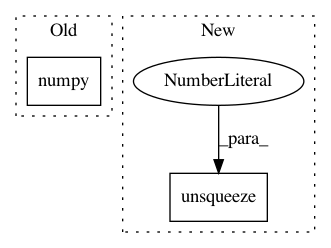

1433d4c435a253e891009b08a9280bc452087db0,test.py,,,#,16
Before Change
out = model(image.unsqueeze(0))[0]
mse = ((target - out) ** 2).mean()
psnr = 10 * log10(1 / mse.data.cpu().numpy())
ssim = compare_ssim(out.data.cpu().numpy(), target.data.cpu().numpy(), multichannel=True)
out_img = ToPILImage()(out.data)
out_img.save(out_path + "psnr_%.4f_ssim_%.4f_" % (psnr, ssim) + image_name)
After Change
target = Variable(ToTensor()(target))
if torch.cuda.is_available():
image = image.unsqueeze(0).cuda()
target = target.unsqueeze(0).cuda()
out = model(image)
mse = ((target - out) ** 2).mean()
In pattern: SUPERPATTERN
Frequency: 3
Non-data size: 2
Instances
Project Name: leftthomas/SRGAN
Commit Name: 1433d4c435a253e891009b08a9280bc452087db0
Time: 2017-11-21
Author: leftthomas@qq.com
File Name: test.py
Class Name:
Method Name:
Project Name: ClementPinard/FlowNetPytorch
Commit Name: c6a079c70368b41873f3288b05b74d38f74b6680
Time: 2018-03-30
Author: clement.pinard@parrot.com
File Name: run_inference.py
Class Name:
Method Name: main
Project Name: eriklindernoren/PyTorch-YOLOv3
Commit Name: 96ae969993c6f476314c2bfc639a67f83fe97239
Time: 2019-04-26
Author: eriklindernoren@live.se
File Name: utils/utils.py
Class Name:
Method Name: get_batch_statistics